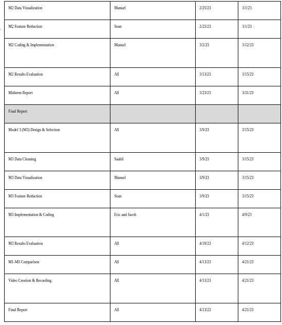
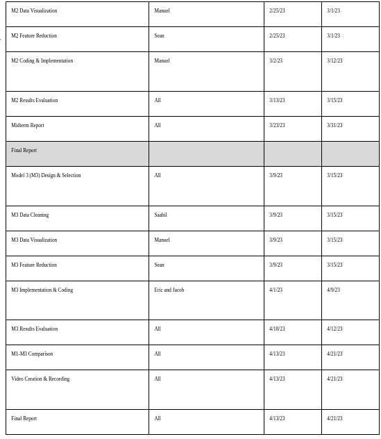

As of 2018, the number of global annual road traffic deaths has reached 1.35 million1, with 38,000 fatalities and associated costs of $55 billion in just the United States. In this project, we will develop a car accident risk assessor for Maryland, using 155,108 data points, including situational features like weather, road and traffic conditions, and static features like vehicle condition.
Work done in this area includes similar data but aims to provide differents forms of insight, Wilson3 (2018) uses a similar dataset for Utah, providing a heatmaps of risk per unit time over 7 years and found that most accidents occurred in high risk areas, but outlined that real time data and more features would result in a better fitted model. Both Wilson3 (2018) and Cigdem et al.4 (2018) highlight the problem of Class Imbalance with different solutions including creating non-accident data and filtering data to highlight relevant information. Both Cigdem et al.4 (2018) and Al-Mistarehi et al.5 (2022) outline the use of a confusion matrix to measure performance.
Based on corroboration found in the literature on the importance of real time data, we have decided to train and test our data on a pre-existing data, with a goal to develop a model that can provide personalized risk assessments given real-time location, driver, and weather detail.
In our proposal, we noted that because our data has a large number of dimensions, we would likely need to use an algorithm to reduce the dimensionality. First, because our goal for this project is to calculate the likelihood of an accident in general, not the severity of an accident nor other information strictly post-accident, we removed features like collision location, severity, driver at fault, etc. Then, we used Principal Component Analysis (PCA) to further reduce the dimensionality of our dataset by determining which features were providing the least explanation for variance in the data. After running PCA, we were able to reduce from 28 features down to 5 principal axes while still retaining 99% of the variance in the data.
The data from PCA is found here.
We will now discuss the unsupervised algorithm we applied. Information on the latitude and longitude (i.e. location) of the driver should play a role in determining their probability of accident. To determine if a driver was in a higher accident risk zone vs a lower accident risk zone, we decided to run DBSCAN on the latitude and longitude training data.
Now, we will discuss the supervised models we implemented. Before we could run a supervised model, we needed to create a set of non-accident data. Our group decided to experiment with two different methods of creating this “dummy” data. Wilson (2018) initially randomly sampled some number of roads/times when accidents didn’t occur, but found that there are a lot of times and roads when accidents simply do not occur often. Another important problem to solve was differentiating accident vs not on roads where accidents happen frequently.
Taking inspiration from Wilson (2018), we chose to use a sampling approach that builds up a set of negative examples that are very similar to our positive examples so that the machine learning model can learn to find the fine differences between when there is and isn’t an accident. There’s an element of randomness to it as well so we also sample situations that are very different. The approach is as follows:
This gives us a training set that is challenging to work with because it’s very hard to tell the positive and negative examples apart, which is great for our dataset since it makes sure that the model can focus on the finer differences. This is a commonly used approach for situations such as this. At the end, we get a dataset with 25% accident data points and 75% non-accident data points, with an ‘accident binary’ column that forms our label for our supervised methods. Numerical data such as speed limit, longitude, latitude were kept as is, but categorical variables such as Route Type, Road Name, Weather, Surface Condition, Light, Traffic Control and so on were one hot encoded. The date and time of the crash posed another challenge, since if we one-hot encoded that, it would take away useful information, so we opted on turning that into variables like day of the year, day of the week, time of the day in minutes and so on.
The non-accident data created through this method can be found here.
Another method involves randomizing the value of each feature for each dummy data point non-uniformly, using expected probabilities that reflect the real world probabilities. For example, if the weather condition feature of our data set had only two possible values, snow or not snow, our first approach will give half of the dummy data a value of snow, while our second approach may only give 5% of the dummy data a value of snow. We also made sure that relationships between features would be kept. For example, “Vehicle Maker” and “Vehicle Model” are tightly connected as Toyota could be matched with Corolla but not with X5. Thus, we made our dummy data as realistic as possible so that our models wouldn’t have an easy time telling the real and dummy data apart.
The non-accident data created through this method can be found here.
The first supervised model we implemented was random forest. The Random Forest algorithm is an ensemble learning technique that combines multiple decision trees to create a more powerful and accurate prediction model. It works by constructing a multitude of decision trees during the training phase and outputting the mode of the classes (classification) or the mean prediction (regression) of the individual trees. The key idea behind the algorithm is that a group of weak learners (decision trees) can be combined to form a strong learner (random forest) that delivers better performance and generalization capabilities.
In our initial literature review, we found that most work in this area got higher accuracy when using random forest compared to some other algorithms used. In this particular case, using a Random Forest Classifier is appropriate for several reasons. Firstly, the algorithm can handle both categorical and numerical features, which makes it well-suited for the diverse dataset containing information about vehicle accidents and non-accidents. Secondly, the Random Forest Classifier is known for its robustness against overfitting, as it combines the predictions from multiple trees, reducing the impact of noise and outliers in the data. Lastly, the Random Forest Classifier is capable of handling imbalanced datasets, like the one in question, where there are 25% accidents and 75% non-accident data points. The algorithm can be easily tuned to account for this imbalance, ensuring that both classes are well-represented in the final prediction model. Overall, the Random Forest Classifier offers a flexible and powerful solution for this classification task, providing accurate results while being relatively easy to implement and interpret.
The second supervised model we implemented was using gradient-boosted decision trees, specifically using XGBoost. The XGBoost algorithm is an implementation of gradient boosting that is useful for its speed and accuracy. Wilson (2018) used the same algorithm for their project but with different features. Their model used features such as solar azimuth and population density. The model excels in classification problems which is why we ultimately decided on implementing this model.
The results of this scan with an epsilon of 0.03 and a minimum points of 1000 are shown below:

Note that there is only one cluster, shown in red. This makes sense as the cluster should follow the shape of Baltimore, where our data is centered around.
To the random forest algorithm on our balanced data (3:1 accident:nonaccident ratio), we decided to use the ‘accident binary’ as our label, where 1 corresponded to a positive value and 0 corresponded to a negative value. Once we divided our dataset into labels and features, we further split the dataset into training (80%) and testing (20%) sets, using the train_test_split function. We decided on running the classifier with 100 trees (n_estimators) and a random state of 42 for reproducibility. After training and predictions, we got an accuracy score of 0.6773:

Given how challenging the final dataset was, this accuracy is around the expectations we had. These numbers can be boosted further with more processing on the dataset, and by trying to normalize some values.
Running the XGBoost model returned an accuracy of 0.71625, a decent score but better metrics to measure would be the recall and precision scores. The model produced a precision of 0.4 and a recall of 0.17224. This means that our model was only able to predict less than 20% of the car accidents and it was only correct about those predictions 40% of the time. These numbers are not great indicating that the model is currently not a good fit for our dataset. These numbers can be improved with optimization of our parameters i.e. max depth, learning rate, etc.
 

https://catalog.data.gov/dataset/crash-reporting-drivers-data
References
World Health Organisation. Global status report on road safety 2018; 17th June 2018; Available at https://www.who.int/publications/i/item/9789241565684
Centers for Disease Control and Prevention. WISQARS (Web-based Injury Statistics Query and Reporting System) [online]; 2020. Available at https://www.cdc.gov/injury/wisqars/index.html
Daniel Wilson. Using Machine Learning to Predict Car Accident Risk; 3rd May 2018; Available at https://medium.com/geoai/using-machine-learning-to-predict-car-accident-risk-4d92c91a7d57
Cigdem, A., and Cevher Ozden. "Predicting the severity of motor vehicle accident injuries in Adana-Turkey using machine learning methods and detailed meteorological data." Int. J. Intell. Syst. Appl. Eng 6.1 (2018): 72-79. Available at https://www.researchgate.net/profile/Cigdem-Aci/publication/324101053_Predicting_the_Severity_of_Motor_Vehicle_Accident_Injuries_in_Adana-Turkey_Using_Machine_Learning_Methods_and_Detailed_Meteorological_Data/links/604a024345851543166bac22/Predicting-the-Severity-of-Motor-Vehicle-Accident-Injuries-in-Adana-Turkey-Using-Machine-Learning-Methods-and-Detailed-Meteorological-Data.pdf?_sg%5B0%5D=started_experiment_milestone&origin=journalDetail&_rtd=e30%3D
Al-Mistarehi, B. W., et al. "Using machine learning models to forecast severity level of traffic crashes by r studio and arcgis. front." Machine Learning Applications in Civil Engineering 16648714 (2022): 31. Available at https://www.researchgate.net/profile/Rana-Imam/publication/360065159_Using_Machine_Learning_Models_to_Forecast_Severity_Level_of_Traffic_Crashes_by_R_Studio_and_ArcGIS/links/6277a08e2f9ccf58eb37685b/Using-Machine-Learning-Models-to-Forecast-Severity-Level-of-Traffic-Crashes-by-R-Studio-and-ArcGIS.pdf